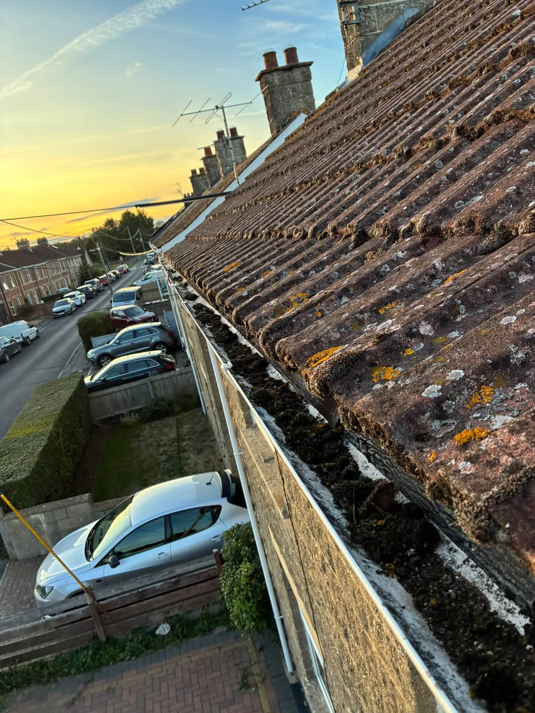
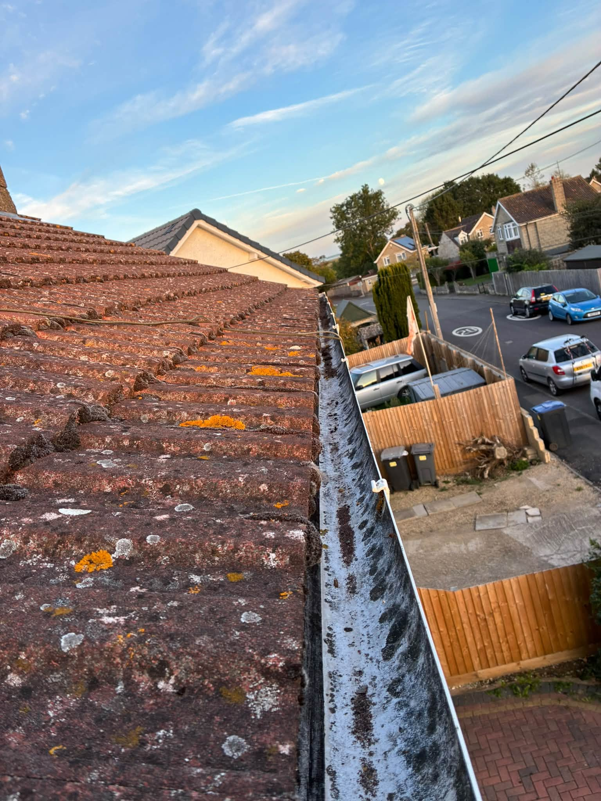
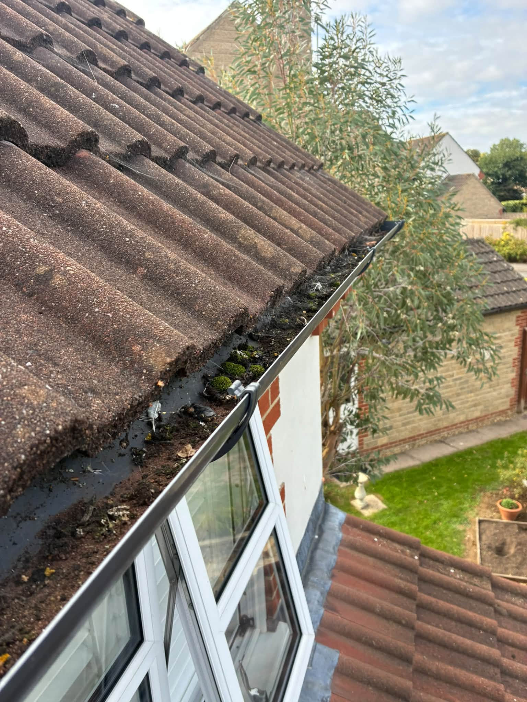
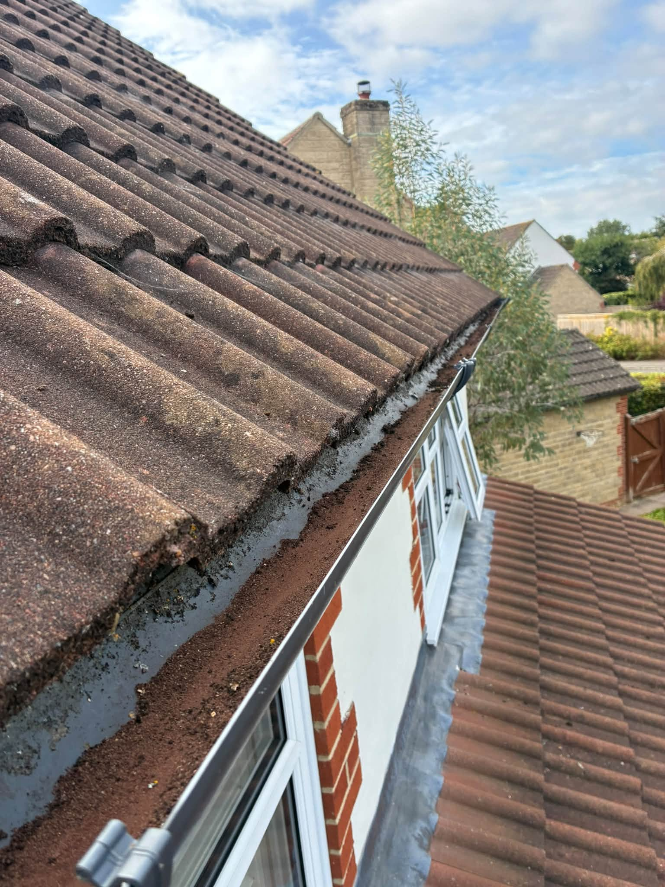
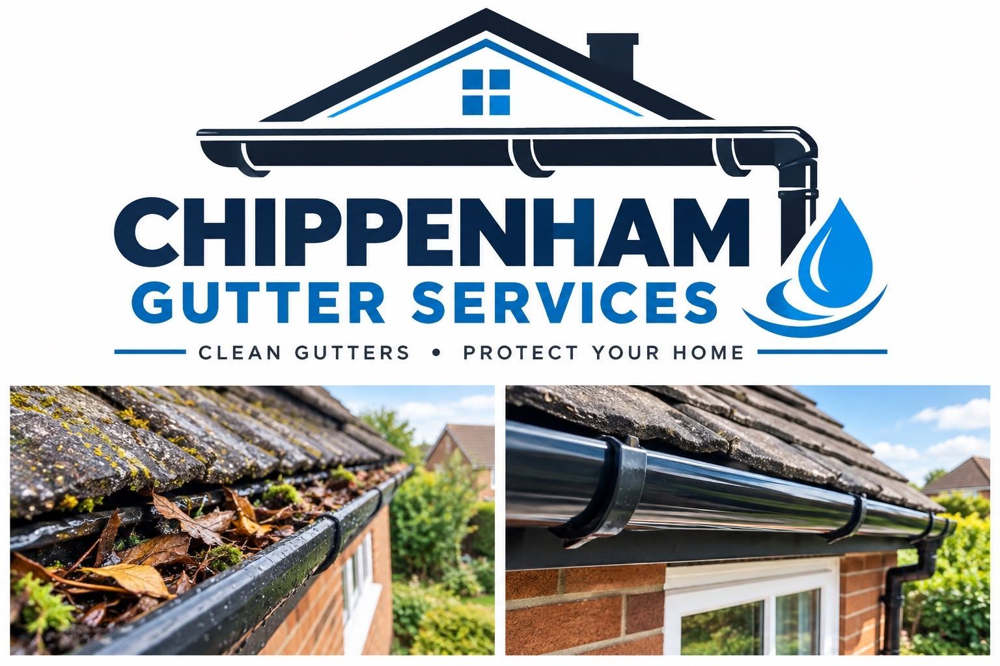

Gutter CleaningClear built-up leaves and debris

Downpipe ClearingHelp water drain away properly
Gutter RepairsAsk about leaks and damaged sections
ROOFLINE CARE
Small blockages can become bigger problems.
Leaves and debris can stop rainwater flowing through your gutters and downpipes. If yours are overflowing, leaking or visibly damaged, Chippenham Gutter Services can help.
Request a quote →

CLEAN · CLEAR · REPAIR
Look after the part of your home that handles the rain.
From cleaning out gutters to clearing downpipes and addressing repairs, get in touch with a photo or a description of the issue.
Tell us what you need →
OUR WORK
A closer look at the roofline.
Photographs supplied by Chippenham Gutter Services.
CHIPPENHAM GUTTER SERVICES
See the difference a clear gutter makes.
The supplied artwork shows the kind of blocked and cleared guttering the service addresses.
Ask for a quote →
LOCAL GUTTER SERVICES
Gutter help around Chippenham.
Chippenham Gutter Services advertises gutter cleaning, downpipe clearing and repairs. Based around Chippenham, with Corsham and Lacock also listed on its business page.
01
Blocked gutters
Get in touch when leaves or other debris are stopping the flow.
02
Downpipe issues
Ask about clearing a downpipe that is not draining as it should.
03
Leaks or damage
Describe the problem and request a gutter repair quote.
REQUEST A QUOTE
Tell us what is happening with your gutters.
Complete the form and WhatsApp opens with your details ready to send. This is a quote request, not a confirmed booking.
CHIPPENHAM GUTTER SERVICES
Ready to get it sorted?
Chippenham and nearby areas · chippenhamgutterservices@outlook.com